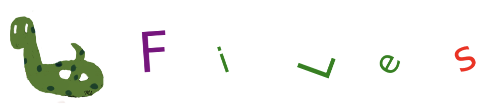

Files#

open()#
The content of files with a .txt extension can be imported using the built-in open() function. It supports various mode types for opening files:
The default mode is
r(read mode), which allows only reading the file.To write to a file, use the
wmode (write mode), which overwrites the file if it already exists.To add new information to the file without overwriting existing content, use the
amode (append mode).The
xmode is used to create a new file. If the file already exists, this mode will raise an error.
You can use the help() function to get detailed information about the open() function, including its parameters, modes, and usage.
help(open)
Read Mode#
r: Read mode (default).
Returns an error if the file does not exist.
Returns a TextIOWrapper object for reading the file content.
The following code imports the states_city.txt file, which is stored in the same folder as your notebook, and it returns a TextIOWrapper object.
This file can be downloaded using the following link.
Save the file to the folder containing the Jupyter Notebook you are using.
If you want to store the file in a different folder, specify the path, such as ‘folder1_name/folder2_name/states_city.txt’.
open('states_city.txt')
<_io.TextIOWrapper name='states_city.txt' mode='r' encoding='UTF-8'>
fhand = open('states_city.txt')
type(fhand)
_io.TextIOWrapper
You can use the help() function to get detailed information about the TextIOWrapper class.
help(fhand)
The following is a list of non-magic methods.
[i for i in dir(fhand) if not i.startswith('_')]
['buffer',
'close',
'closed',
'detach',
'encoding',
'errors',
'fileno',
'flush',
'isatty',
'line_buffering',
'mode',
'name',
'newlines',
'read',
'readable',
'readline',
'readlines',
'reconfigure',
'seek',
'seekable',
'tell',
'truncate',
'writable',
'write',
'write_through',
'writelines']
To read the fhand, it can be iterated through line by line.
fhand = open('states_city.txt')
for line in fhand:
print(line, end='')
State: Ohio
City: Columbus
City: Cleveland
State: Florida
City: Miami
City: Tampa
City: Orlando
State: Oklahoma
City: Tulsa
City: Norman
Each line is a string.
line
' City: Norman\n'
type(line)
str
Remove White Spaces#
To remove spaces from the left, right, or both sides of a string, use the string methods lstrip(), rstrip(), and strip(), respectively.
fhand = open('states_city.txt')
for line in fhand:
print(line.strip())
State: Ohio
City: Columbus
City: Cleveland
State: Florida
City: Miami
City: Tampa
City: Orlando
State: Oklahoma
City: Tulsa
City: Norman
read()#
It returns the entire text as a single string.
fhand = open('states_city.txt')
text = fhand.read()
text
'State: Ohio\n City: Columbus\n City: Cleveland\n\nState: Florida\n City: Miami\n City: Tampa\n City: Orlando\n\nState: Oklahoma\n City: Tulsa\n City: Norman\n'
type(text)
str
print(text)
State: Ohio
City: Columbus
City: Cleveland
State: Florida
City: Miami
City: Tampa
City: Orlando
State: Oklahoma
City: Tulsa
City: Norman
The read(n) method returns the first n characters. The following code returns the first 10 characters.
fhand = open('states_city.txt')
text = fhand.read(10)
text
'State: Ohi'
readlines()#
It returns a list, where each line in the text is represented as a string.
fhand = open('states_city.txt')
text = fhand.readlines()
text
['State: Ohio\n',
' City: Columbus\n',
' City: Cleveland\n',
'\n',
'State: Florida\n',
' City: Miami\n',
' City: Tampa\n',
' City: Orlando\n',
'\n',
'State: Oklahoma\n',
' City: Tulsa\n',
' City: Norman\n']
type(text)
list
Write Mode#
w: Write mode.
It opens the file for writing.
If the file does not exist, it will be created.
It returns the number of characters in the last written string.
If the file already exists, all data will be deleted first, and then new strings will be written.
The following code opens the animals.txt file and deletes all its data if the file exists.
Otherwise, the animals.txt file is created. The last three lines, zebra, lion, and cat, are written to the file.
fhand = open('animals.txt', 'w')
type(fhand)
fhand.write('zebra\n')
fhand.write('lion\n')
fhand.write('cat\n')
4
A file cannot be read in write mode. The following will return an error message.
fhand = open('animals.txt', 'w')
type(fhand)
fhand.write('zebra\n')
fhand.write('lion\n')
fhand.write('cat\n')
fhand.read()
The following code is used to read the data from the animals.txt file.
fhand = open('animals.txt', 'r')
print(fhand.read())
zebra
lion
cat
Append Mode#
a: Append mode.
It opens the file to append new data to it.
If the file does not exist, it will be created.
It returns the number of characters in the last written string.
If the file exists, in append mode, the new data will be added at the end without deleting the existing content.
The following code opens the animals.txt file if it exists.
Otherwise, the animals.txt file is created. The last three lines, dog, mouse, and cow, are written to the file.
fhand = open('animals.txt', 'a')
type(fhand)
fhand.write('dog\n')
fhand.write('mouse\n')
fhand.write('cow')
3
The following code is used to read the data from the animals.txt file.
fhand = open('animals.txt', 'r')
print(fhand.read())
zebra
lion
cat
dog
mouse
cow
Create Mode#
a: Append mode.
It creates a new file.
It returns an error message if the file already exists.
The following code creates the courses.txt file.
fhand = open('courses.txt', 'x')
The following code is used to read the data from the animals.txt file.
fhand = open('courses.txt', 'r')
print(fhand.read())
Delete a File#
To delete a file, use the os.remove() function from the os module.
import os
os.remove('courses.txt')
Examples#
fhand = open('states_city.txt')
for line in fhand:
print(line, end='')
State: Ohio
City: Columbus
City: Cleveland
State: Florida
City: Miami
City: Tampa
City: Orlando
State: Oklahoma
City: Tulsa
City: Norman
Question-1: Determine the total number of cities.
fhand = open('states_city.txt')
count = 0
for line in fhand:
if line.strip().startswith('City'):
count += 1
print(f'Number of Cities: {count}')
Number of Cities: 7
Question-2: Store city names in a list.
fhand = open('states_city.txt')
city_names = []
for line in fhand:
if line.strip().startswith('City'):
colon_index = line.find(':')
city_names.append(line[colon_index+2:-1])
print(f'City Names: {city_names}')
City Names: ['Columbus', 'Cleveland', 'Miami', 'Tampa', 'Orlando', 'Tulsa', 'Norman']
Question-3: Store city names in a list using regular expressions.
import re
fhand = open('states_city.txt')
city_names = []
for line in fhand:
city_name = re.findall('City:\s*(\w+)',line)
if len(city_name) !=0:
city_names.append(city_name[0])
print(f'City Names: {city_names}')
City Names: ['Columbus', 'Cleveland', 'Miami', 'Tampa', 'Orlando', 'Tulsa', 'Norman']